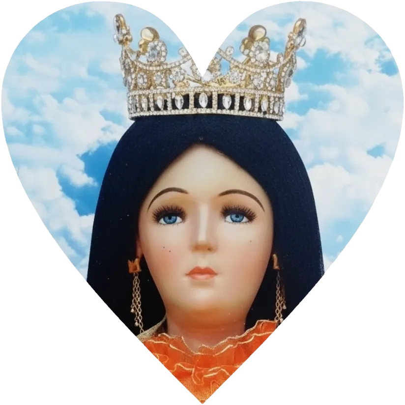

Tienes un Rosario en curso en los Misterios Gozosos
Has completado el ramo para Nuestra Madre la Virgen María.
Que la paz de Cristo, el amor de María y la gracia del Santo Rosario, permanezcan en tu corazón y te acompañen siempre.